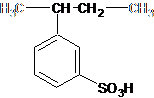
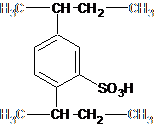

Questions
1) Calculate the theoretical capacity of a sulfonated polystyrene resin if it contains 8% DVB.
|
styrene unit  |
divinyl benzene unit  |
2) Sulfonated polystyrenes have a weight capacity of about 5.4 meq/g. A swollen H+ form resin with 10% DVB has a density of 1.25 g/cm3, a water content of 46.8 wt % and a fractional void volume of 0.4. Calculate the theoretical volume capacity.
3) Write equilibrium equations for the following systems:
a. H+ form carboxylic acid resin absorbing sodium
b. Tertiary amine resin exchanging Iodide for Chloride
c.
d. H+ form sulfonated polystyrene resin removing Cr+3
4) The area of an ion exchanger material bed is 7ft2 and the rate at which the water is being softened is 9 gpm/ft2. What is the volume of the water being softened every minute? How many hours will the total process take if 32,046 gallons of water can be softened before the resin needs to be regenerated?
5) A brine solution (concentrated solution of table salt) is prepared in advance and then stored until needed. Breakthrough occurs in a water softening process and the resin must be regenerated. How many liters of the brine solution is required if 74.6 kg of salt is needed for the bed of exchange material? The solution of NaCl has a molarity of 1.03.
6) Would you suggest to someone with a heart condition to use a potassium based ion exchange resin or a sodium exchange resin and why?
a. potassium based resin
b. sodium based resin
7) In a given ion exchange reaction in an UPW process, would increasing the flow rate of the water increase productivity of this reactor?
8) Is the ion resin fully saturated at breakthrough?
9) When breakthrough occurs are all sodium ions removed?
10) Why do most modern ion exchange resins consist of styrene and DVB and how does the cross-linking of these products improve the productivity of the resin?
11) If a solution contains copper ions would a resin with a potassium ion attached or a resin with a calcium ion attached be more effective in removing the copper ions?
12) In an experiment .400g of air-dried chloride form resin, with a total capacity of 3.63 meq/g, is added to 100mL of .005N (5.0 meq/L) NaNO3. Once at equilibrium the concentration of NO3- is .53 meq/L and the concentration of Cl- is 4.36 meq/L. What is the separation factor for this experiment? Does the resin favor NO3- or Cl-?
Cl-R + NaNO3 → NO3-R + NaCl
13) The water
in
14) If a resin has a total hardness removal capacity of 300,000 grains/cycle and the water treated has a hardness of 353, how many gallons of water can be softened before resin must be regenerated?
15) Define when water is considered “hard water”?
16) Name three industrial applications of ion exchange.
17) What are the three most common ion exchange materials?
18) Which parameters are Actual Capacity based on?
19) Will a resin select Ba+2 or Mg+2?
20) Name three effects that govern the overall rate of an ion exchange reaction.